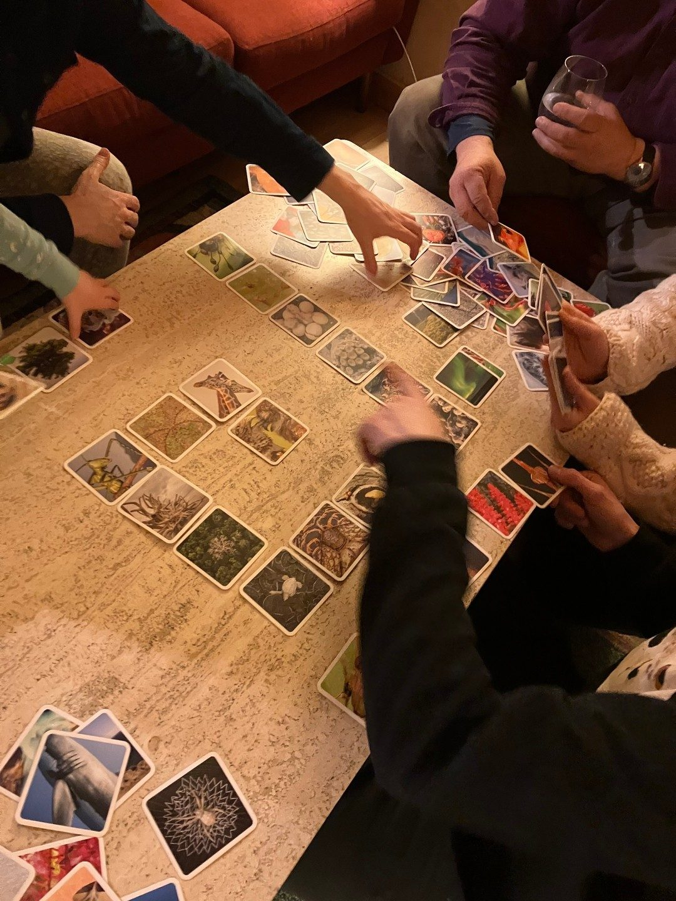
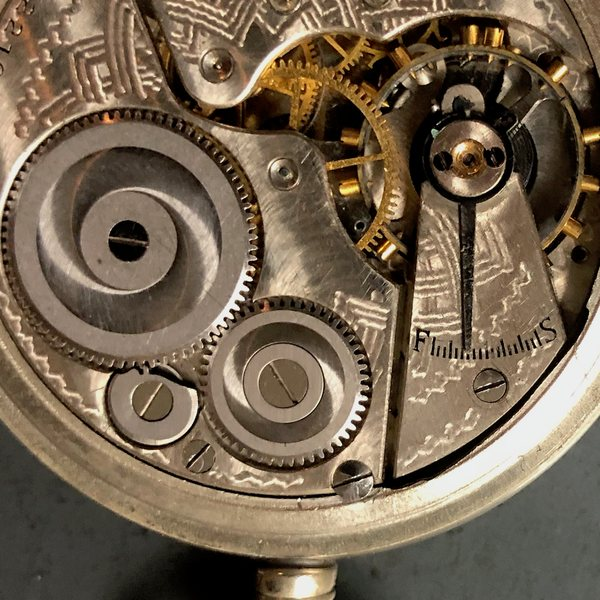
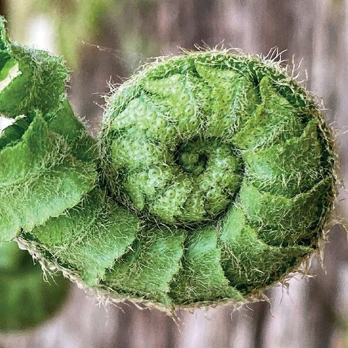
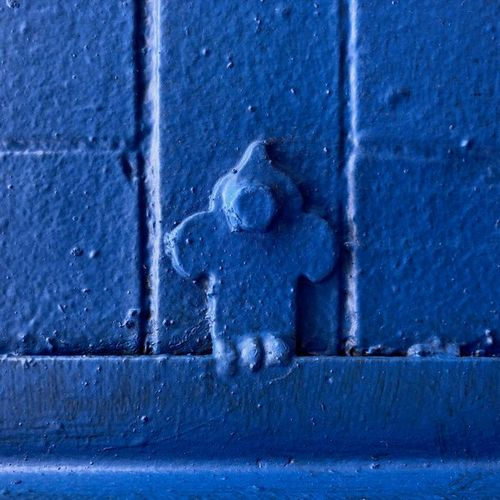
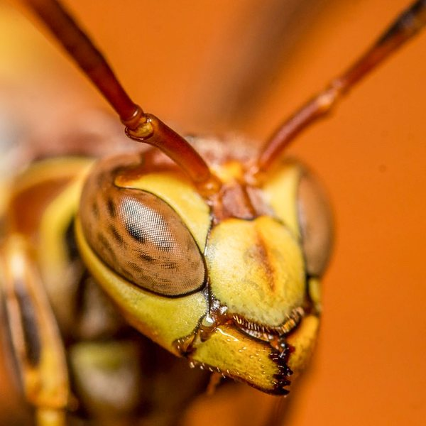
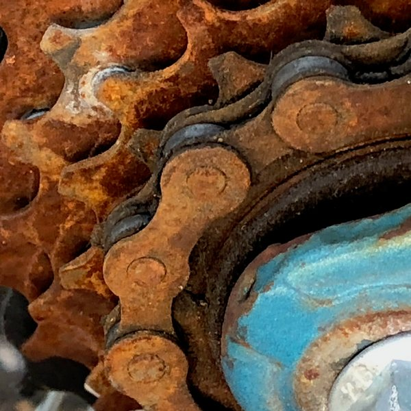
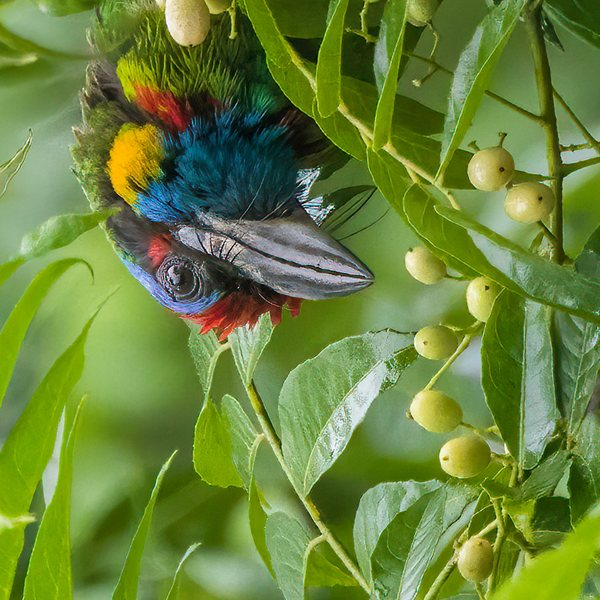
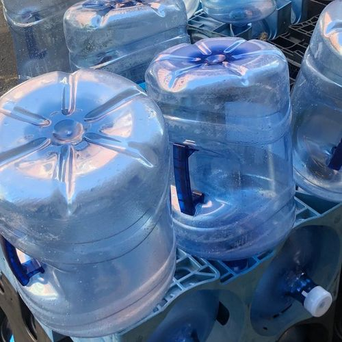
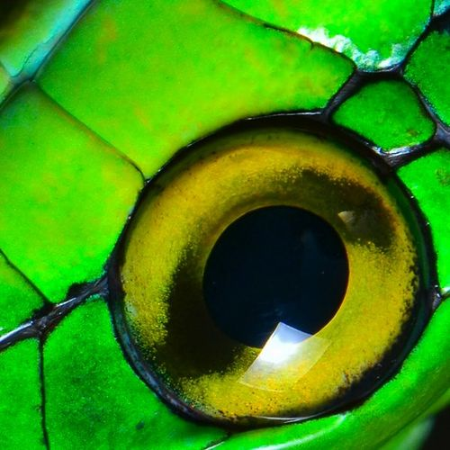

How to play
Guides, Gameplay and Videos








Connect with Creativity
With OuiSi, there's no wrong way to play. While a couple of games can be played competitively, OuiSi games are most often enjoyed collaboratively. OuiSi can be enjoyed solo or in groups of nearly any size.
Creative Play
Flex your artistic muscles (ages 4+).
The rules in this section are flexible. Make them your own by finding new ways of playing, or use them as building blocks for unconstrained play. Ages 4 to 104.
-
Watch
OuiSinoes
Original · NatureMake Visual Connections in this engaging take on dominoes! Like a great conversation, everyone wins as each person adds something thoughtful to the growing board.
Basic play
- Place a Photo Card in the middle of the play area.
- One at a time, add Photo Cards to the board based on how each new one Visually Connects with already played cards.
- Photo Cards can be drawn from a shared image-up pile. Or, deal ten Photo Cards at a time to each player (and draw a new one after each play).
- Play solo or with friends.
-
Watch
Imaginate
Original · NatureEach Photo Card in the set looks like something else. It’s like when the clouds overhead look like a flock of sheep. Imaginate can be combined with other activities in the Guide like Storybuilder and Draw.
Basic play
- Take turns selecting a Photo Card and place it image-up so that everyone can see.
- Each player imagines what else that image might be. Discuss with each other what you see.
- Option: write down or draw what you see, and compare answers.
- Enjoy everyone’s wonderful imagination!
-
Watch
Trainmaker
Original · NatureBuild a “train” of Photo Cards one at a time, with each one visually connecting to the one prior. Have fun with the train shapes you make, from spirals to one long line. There are so many connection possibilities that you’ll never make the same train twice.
Basic play
- Place any Photo Card image-up on your playing surface to start your train, and place the remaining Photo Cards image-up beside the play area.
- Choose any Photo Card from the pile that connects with the latest one played, and add it to the end of the train. Keep going until you run out of connections, Photo Cards, time or space!
-
Watch
Storybuilder
Original · NatureChoose Photo Cards as prompts for your next written or verbal adventure. Use the Imaginate activity to come up with ideas from each Photo Card. Stories can be crafted on your own or with friends.
Basic play
- Choose five or more Photo Cards from the set and spread them out image-up.
- In a journal, write down observations and ideas about what you see in each Photo Card.
- Connect your observations and ideas to the characters, setting and plot of your story.
- Once you think you have the basics of your story together, begin writing the whole thing!
-
Scavenger
Original · NatureExplore your world for Visual Connections using the Photo Cards as prompts. Scavenger is great for mindfulness, photographers and for curious kids!
Basic play
- Choose any Photo Card from the set.
- Look for something in your surroundings that connects with your chosen Photo Card.
- Find a new Photo Card in the deck that matches what you just found in your surroundings.
- Continue back and forth between steps 2 and 3.
Feel free to document the hunt using a camera (great for parents looking to introduce technology as a creative tool).
-
Eye Spy
Original · NatureEye Spy is a fun take on the game I Spy (“with my little eye”) and is a great option on a road trip, a walk or even around the house!
Basic play
- Choose any Photo Card from the set.
- Find a Visual Connection between your Photo Card and something in your environment.
- Have friends guess what you’ve spotted! Give them a clue, like “this is made of...” or “this starts with the letter...”
- The player who guesses correctly chooses the Photo Card in the next round.
-
Draw
Original · NatureTurn the spark of a Photo Card into a full-blown drawing. Draw alone or with friends.
Basic play
- Choose a Photo Card, and imagine it as just a snippet of a much larger picture or scene.
- Place the Photo Card on a sheet of paper (in any spot you like) and draw the rest of the picture.
-
Watch
Megamal
NatureIt’s time to make your own imaginary creature (a “megamal!”). Like many activities in the guide, this one’s easier to see than explain.
Basic play
- Go through the deck and choose photo cards that might make good “parts” of a creature, like a lizard’s tail or a pig’s nose.
- Try making a mega-fish or mega-bear, or invent your own animal (ever seen a tiger-turtle?).
- Really, you can invent or imagine any shape, animal or “thing” you want. Try making a car out of photo cards by focusing more on the shapes you see, rather than “what” is pictured.
-
Watch
OuiSystems
NatureThis activity is more open-ended than most activities in this guidebook (we think that’s a good thing!). OuiSystems is a blend of sorting and imagining. You can group the photo cards into groups based on similarities.
Example Systems
- All photo cards with stripes or circles
- Piles based on dominant colors (e.g. “blue pile” or “purple pile”)
- Mammals or amphibians
- Photo cards with sky or water in them
- Things that are (or look like) eyes, feet, hands - whatever you can think of
- Photo cards that make you feel joyful or especially curious
- Things related to the planet’s water cycle, like clouds and glaciers
-
Degrees
NatureThis activity is like a visual connection, but more logic-based. Select any two cards and find a way to connect them based on the actual things you see in each photo card. Scan the QR code on the back to learn more and spark ideas about the card’s content. This is a great activity for a science class (connections can become more complex with older students).
Here are some connections you might consider to get started
- cause and effect relationships
- cycles or phases
- states of matter
- properties or functions
- Use two cards to create a hypothesis or inference statement.
Competitive Play
Challenge your visual acuity (ages 10+).
Ready to test your visual skills against others? Give the competitive version of OuiSinoes a try. Or, team up against a common opponent in OuiSi Capture.
-
OuiSinoes
Original · NatureIn this winner-takes-all version, make Visual Connections that wow opponents in the style of dominoes.
- Players: 3 to 7.
- Time to play: about 20 minutes.
- Ages: 10 & up.
- To win: get to five points, one for each winning match.
- Additional items: a token (e.g. a coin) for each player.
-
Watch
Capture
Original · NatureIn Capture, all players work together against a common opponent represented by a penalty pile. Players take turns giving a one-word clue that visually describes five photo cards on a 5x5 board. Remaining players earn the whole team points for successfully guessing the clued photo cards, and are penalized for incorrect choices.
- Players: 2 or more.
- Time to play: 20-30 minutes.
- Ages: 10 & up.
- To Win: Earn 25 cards before the penalty pile gets to 25.
- Additional items: A coordinates board and five small tokens (e.g. coins).
Unconstrained Play
Explore with imagination.
OuiSi’s unique images and Visual Connections make excellent ingredients for unconstrained play. Due to its very nature, we don’t want to add too many specifics that could limit experimentation. Instead, we offer suggestions to spark imagination and play. If this section is too open-ended right now, start with some activities found in the creative play section.
Prompts/suggestions
- Do any of the Photo Cards look alike?
- Do the Photo Cards tell any stories? If a Photo Card had something to say, what would it be?
- What sound might a Photo Card make? What might it smell like? Do Photo Cards have similar sounds or smells?
- If the images capture only a fraction of a larger scene, what does that larger scene look like?
- Can the cards be integrated with other toys like building blocks or a train set?
- Do the images on the cards remind you of anything else in the room?
- Can you build things with the cards themselves? A bridge using some building blocks and any card that contains metal, for example?
- Can you make OuiSi connections and then play versions of Memory?
- How many cards look like animals or faces? What are their names? Where do they live?
- Do any of the cards remind you of how you are feeling right now? For example, happy, hungry, sad or courageous?
Mindfulness
Less screens, more noticing.
Doesn’t it feel like we are always glancing at our screens? Thousands of images flying at us each day. It’s tough to slow down long enough to enjoy activities that harness curiosity. OuiSi offers an antidote through play and the act of noticing.
-
OuiSense
Original · NatureSometimes we need a moment of pause from our work/schoolwork. OuiSense is a five-minute break that will bring you back to a state of presence, noticing and imagination. While OuiSi is primarily visual, OuiSense is an activity that engages all senses. If you get stuck, no problem! Move on to another sense.
Basic play
- Pick a Photo Card and simply notice the details of it for a few moments.
- “Find” four things that Visually Connect with your card. You can search the rest of the deck for connections, you can explore your surroundings (like in Eye Spy), or you can close your eyes and imagine four connections.
- Think of three sounds that might relate to your card. Now that you’ve shifted to a new sense, it may require more imagination. You can again search the deck for inspiration, or you can close your eyes and think of sounds that might relate.
- Think of a smell that might relate to your card. Use the cues in Step 3 to help.
- Think of a touch/feeling sensation that relates to your card. Maybe the picture looks fuzzy, or has a “warmth” to it. Use the card deck or your surroundings for inspiration if stuck.
- Finally, think of a taste that relates to the card.
-
OuiFeel
Original · NatureTry out the activities below and see which one is a fit for you. There’s no wrong way to try.
Option 1: How do you feel?
- Spend a quiet minute reflecting on how you’re feeling. Focus on your body. Are you hungry, tired, excited, nervous? Can you sense “where” in your body you are holding these feelings?
- Look through the Photo Cards to find a card that represents this feeling.
- Focus on the feeling and the photo card for several moments. Ask yourself, “what about this card represents my feeling?”
- Spend time journaling your response, or share your thoughts with others.
Option 2: Gratitude
- Select a photo card from the deck and examine it closely. Let the image inspire ideas/things for which you are grateful.
- Say to yourself “I am grateful for...” and finish the sentence based on the previous step. For example, “I am grateful for fresh air and clean water.” Repeat this sentence a few times.
- Repeat the previous steps for two minutes. Over time, build your “practice” to five or even ten minutes.